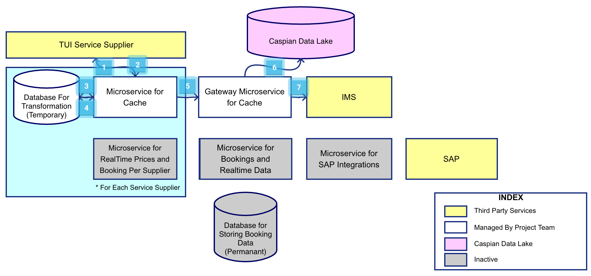
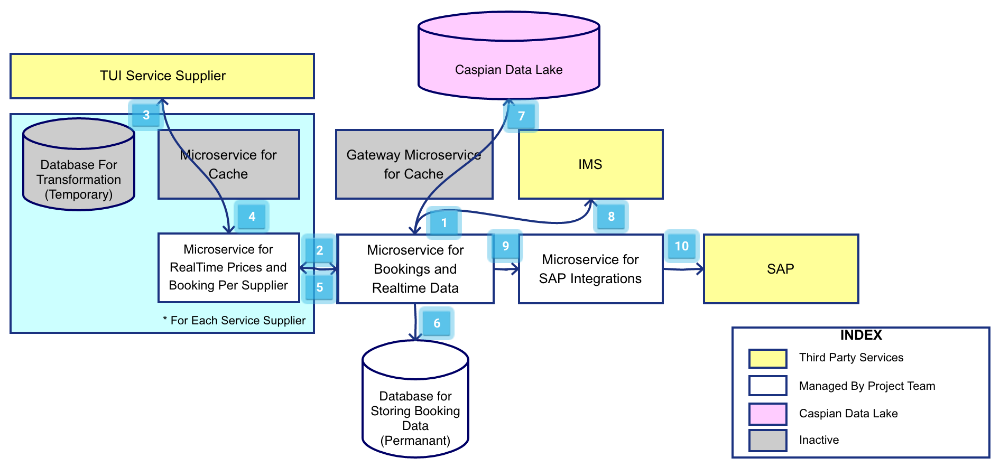

Architecture For IMS
Exported at: Mon Mar 11 2019 17:08:27 GMT+0100 (CET)
Flow for Adding Cache in IMS

-
Request is sent from
Microservice for Cache to
the
TUI Service Provider with
the necessary parameters to get the Cache Data from the Service
Provider
-
Response is sent by the
TUI Service Provider to
Microservice for Cache with
the Cache Data in the Format which is different for each service
provider.
-
The Responses are then stored from the
Microservice for Cache to
Database For Transformation (Temporary).
-
Once all the necessary requests are stored in the
Database For Transformation (Temporary). Microservice for Cache will fetch the data from
Database For Transformation (Temporary)
and transform the Data for the API as required for
Gateway Microservice for Cache.
-
API Data is Sent from
Microservice for Cache to
Gateway Microservice for Cache.
-
Gateway Microservice for Cache
send request to
Caspian Data Lake.
-
Gateway Microservice for Cache
send the data to IMS in
exactly the same format as required by IMS.
Flow for Booking

-
On Booking Request in IMS an
API call is sent to
Microservice for Booking and Real-time Data
this request is then formatted as per the standard API Requirement
for
Microservice for Real-Time Prices and Booking Per Supplier.
-
Data from
Microservice for Booking and Real-time Data
the
Microservice for Real-Time Prices and Booking Per Supplier.
-
Data is sent from
Microservice for Real-Time Prices and Booking Per Supplier
to the
TUI Service Supplier in the
format as required by TUI Service Supplier.
-
Booking is made on the
TUI Service Supplier and the
response of the Booking is sent back to the
Microservice for Real-Time Prices and Booking Per Supplier.
-
Microservice for Real-Time Prices and Booking Per Supplier
then converts the data into the format required for
Microservice for Bookings and Real-time Data.
-
Microservice for Bookings and Real-time Data
send the Data to the
Database for Storing Booking Data (Permanant)
to store all the booking data along with the request and the
response.
-
Microservice for Bookings and Real-time Data
send the
Data to the Caspian Data Lake
along with Request and the Response.
-
Microservice for Bookings and Real-time Data
transform the response as per the IMS standards and send back to
IMS.
-
In Case of Successful booking
Microservice for Bookings and Real-time Data
send the Booking Data to the
Microservice for SAP Integrations.
-
Microservice for SAP Integrations
finally send the Data to
SAP for the Billing Management.